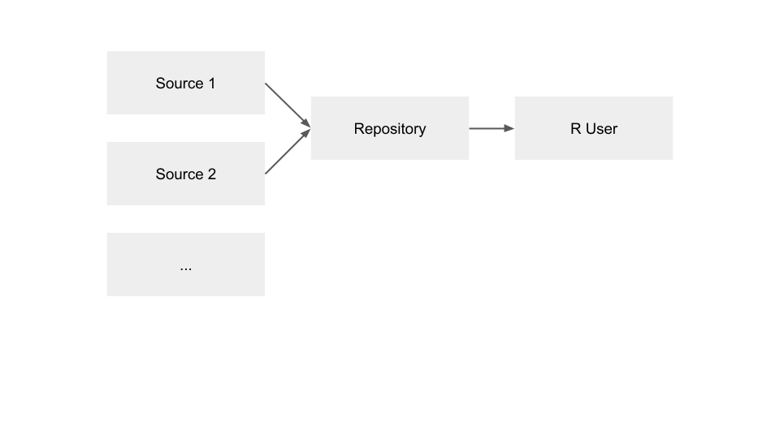

7.1 Using RStudio Package Manager Repositories
Session overview
In this session, you will:
- Learn about different package sources and repositories available in RSPM
- Configure different sources in RSPM
- Configure multiple repositories in RSPM
Course outline
Workflow for using RStudio Package Manager:
- Administrator installs RSPM on a server
- Administrator performs configuration on RSPM server
- Administrator creates sources and repositories
- End users connect to repositories and download packages
In this module:
- Administering RSPM via the CLI and web interface
- Different types of sources in RSPM
- Repository configurations in RSPM
Administering RSPM
Administering RSPM
From the CLI, you can:
- Initiate CRAN metadata sync
- Add sources and repositories
- Configure different methods of serving packages
- Configure server settings
From the web interface, you can:
- Verify and view repositories
- Explore package details and dependencies
- View package usage
- Inform users on how to get packages from RSPM
Different types of sources in RSPM
Single source and single repository
Package sources can be one of the following types:
cran,curated cran,local,git
Package repositories use a database and specialized web server to handle HTTP
requests from R and serve a source package, archived source package, or
PACKAGES file.
More details on repositories and sources are provided in the documentation on Repositories and Sources.

Multiple sources and single repository
-
The order of source subscriptions is important and determines the precedence in which packages will be served
-
The order of sources within a repository can be changed using the
rspm reordercommand. -
For repositories with multiple sources, RSPM will show which source a package came from.

Multiple sources and multiple repositories

Configuring sources
Configuration quickstarts:
- Serving CRAN Packages
- Serving Local Packages
- Serving Local Packages from Git
- Serving CRAN and Local Packages
- Supplementing CRAN with Bleeding Edge Packages from GitHub
- Serving an Approved Subset of CRAN
- Serving an Approved Subset of CRAN and Local Packages
All of these configuration scenarios are described in the documentation on Get Started - Configuration.
Repository configurations in RSPM
Serving CRAN packages
-
A common use case for RStudio Package Manager is making CRAN packages available in environments with restricted internet access and tracking package usage statistics.
-
The CRAN source is included as an internal source by default.
-
The sync mode is configured to
lazydownloads by default, but theCRAN.SyncModeproperty the RSPM configuration file and can be set toeagerdownloads for eager package fetching. -
The CRAN source is updated according to a the
CRAN.SyncScheduleproperty. By default, RSPM will sync once a day at midnight (in the server’s timezone).

Serving a subset of CRAN packages
-
A curated CRAN source enables administrators to give access to an approved list of CRAN packages using change management to preview changes, add new packages, and run updates.
-
The required dependencies for the specified packages are automatically discovered and included in the repository.

Serving local packages
-
Many teams have a handful of internally built packages.
- You can create a bundled version of each package and copy the resulting package files to the RStudio Package Manager server.
-
RStudio Package Manager will ensure that the latest version is the default package version that is available
- But will keep older versions available in the repository's archive for users who want to use specific versions.

Serving packages from Git
-
Serving packages from a local source requires manual steps to add and update bundled versions of packages.
-
If your organization uses Git to store internal R packages, you can automate this process using a git source.
-
More details on building R packages from Git are provided in the documentation on Building R Packages.

Your turn
Next complete the exercise.
Signs of success:
- You understand the different types of sources and repositories available in RSPM
- Your RSPM instance is configured with repositories and packages from multiple sources